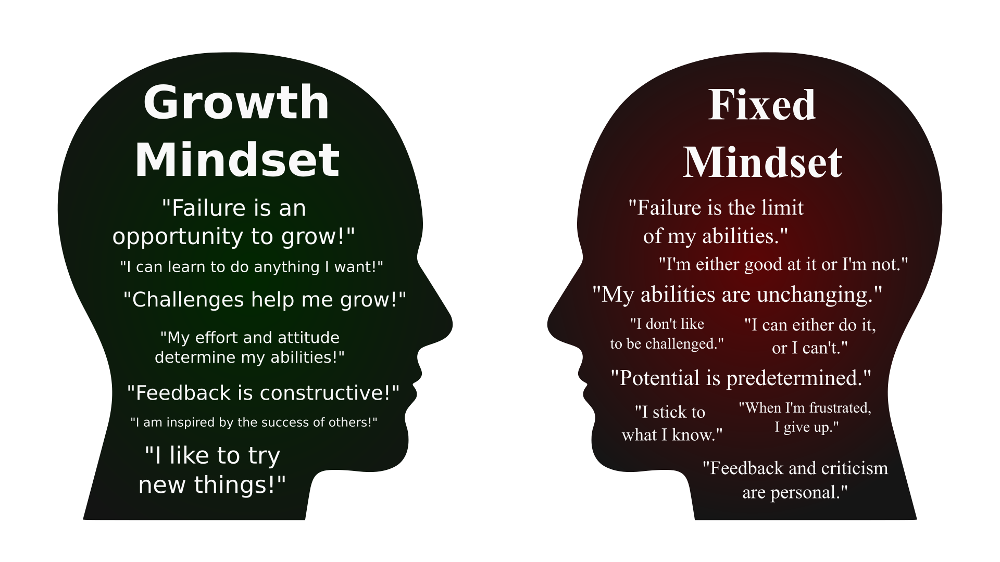

Week 1: Growth Mindset and Personal Goals#
Overview#
In this first studio, you will meet your legends, learn about the idea of a Growth Mindset, and prepare you to start selecting team members with whom you will work with throughout the rest of the course.
We will address the following activities and exercises in studio 1.
Introduce the your legends
Understand how the studios will be run
Understand the growth mindset
Start thinking about forming your team
Meet the Teaching Team#
⏱️ 10 minutes - Class
Devices closed for this exercise
Legends (formerly known as tutors) will be your most valuable resource in this course. Ensure you know their names and how to contact them. You will find their contact details on the blackboard page. Remember that the staff are here to help and that you shouldn’t feel reserved about asking questions. If you need to speak to a Legend, raise your hand to get their attention.
Each team will have a specific Legend that “manages” their team. A Legend should be thought of as a friendly and helpful manager, but one that is too busy to do any work for you. They will give advice, ask questions, and provide feedback, but ultimately, you will make all of the decisions.
Each studio will have multiple Legends, and you are free to ask questions to any of them throughout the studios.
But! Your primary Legend is the one that you should contact outside of the studio.
In each studios, Legends will guide you through the studio activities and will assist with any queries. These outlines are designed for in-class face-to-face learning, but for students that missed a session or want to review the materials, the materials will always be available.
If you get stuck or are unsure about any information or learning material in these outlines, please don’t hesitate to alert any staff member.
What do I bring#
Many activities will not require any devices, and we will actively encourage you to close your devices and focus on the tasks at hand. It is well documented that people learn more when devices are not on an distracting them.
As such, we request that you bring alone a paper notebook and a pen to write on.
How these studios will run#
⏱️ 10 minutes - Class
Devices closed for this exercise
During these studios, Legends will introduce outline learning material and highlight exercises and studio goals. When prompted, read the exercises and tasks and complete the required sections either individually or with team mates.
These studios will run for multiple hours. Legends will provide short 5-10 minute breaks every hour, but feel free to take short breaks if you need them.
Each studio will run for up to 2 hours and will include exercises, activities and content to reinforce what was learned in the seminar. After the studio, there is an additional hour in the studio space set aside for teams to plan and work. During this time Legends will be available for consultation, but won’t be running any formal activities.
Exercise 1: Familiarising Yourself with … Yourself and Your Group#
⏱️ 5 minutes - Individual
Devices can be used for this exercise
What is your current skill level?#
Write down answers for the following:
Do you have any experience working in teams or in software innovation?
Have you worked in the industry?
Have you been part of a team casually or professionally?
Have you developed an innovative solution, algorithm, function or software?
Have you been part of a sports team or hobby group?
Are you fresh out of high school or have you spent several decades working?
What did you do before this course?
Think about how the answers to these questions will impact your participation in this course.
Nothing in Excess#
⏱️ 5 minutes - Individual
Devices can be used for this exercise
Decide how you plan on approaching the course based on your thoughts from the previous exercise. Consider if you are:
Beginner (limited team and innovation experience):
Ensure you immerse yourself in course content including seminar and studios.
If you miss a seminar or a studio, make sure you revise them in your own time before the next session.
Don’t feel overwhelmed, the Course Coordinator and Legends are available to answer questions, chat and break down course content. Feel free to discuss your progress with the teaching team.
Focus on producing consistent and incremental progress, rather then shooting for overly ambitious goals and not producing any results.
Intermediate (some team and innovation experience):
All of the above, in addition to…
Identifying your skills and capabilities early, and considering what you can bring to the team.
Being proactive with your team and taking the initiative with tasks and activities.
Starting to think about innovative software design and development ideas, and how you could implement them in the timeframe of a semester.
Advanced (extensive team and innovation experience):
All of the above, in addition to…
Reaching out to your peers to enhance course content and share your knowledge and experience.
Seeking out beginners to balance out team composition.
Leading by example to develop your leadership and mentorship skills.
Be aware that your learning approach or level may develop during the course of the semester. Re-evaluate yourself based on your progress during the semester and don’t be afraid to push your own boundaries.
Give a Pledge when Trouble is at Hand#
⏱️ 5 minutes - Group
Devices closed for this exercise
Equipped with the knowledge and tools from the previous two exercises, bring your attention to the people at your table.
Take a moment to introduce yourself by taking 1 minute to share:
Your name.
Your degree and year level.
Your current skill level (see answers to your questions above).
Your learning approach to this course,
And, which capabilities you most strongly bring to a team.
You only have 1 minute to introduce yourself. Additionally, ensure everyone gets a chance to speak and be mindful of taking up too much time.
Take a break#
⏱️ 5 minutes
Exercise 2: Understanding the Growth Mindset#
Background#
⏱️ 20 minutes - Individual
Devices closed for this exercise
According to Carol Dweck, individuals are placed on a spectrum according to their implicit beliefs about the origins of ability and capabilities; those that believe that success is based on innate ability are described as having a ‘fixed’ theory of intelligence (fixed mindset), while those that believe their success is based on training, learning and hard work are described as having a ‘growth’ theory of intelligence (growth mindset). In 2012, Dweck defined the growth mindsets in an interview:
In a fixed mindset students believe their basic abilities, their intelligence, their talents, are just fixed traits. They have a certain amount and that’s that, and then their goal becomes to look smart all the time and never look dumb. In a growth mindset students understand that their talents and abilities can be developed through effort, good teaching and persistence. They don’t necessarily think everyone’s the same or anyone can be Einstein, but they believe everyone can get smarter if they work at it.

As a lass, watch the following video in which Carol Dweck talks about her work. The video is embedded for reference.
Mindset Diagnostic Test#
⏱️ 5 minutes - Individual
Devices required for this exercise
Now that you have developed an understanding of the growth mindset, we will use the link below to gauge where your personal mindset falls on the mindset spectrum. Once you have completed the test, reflect on the outcome and ask yourself whether you want to change your mindset or whether you are comfortable the way you are now.
Awareness Circle#
⏱️ 20 minutes - Group (combine two tables)
Devices closed for this exercise
At your table and one table near you, conduct a group exercise called the ‘Awareness Circle’ to gain an understanding of where your mindset is compared to your fellow students’ mindsets.
‘Awareness circle’ may sound like a ridiculous concept dreamt up by a cult living in the desert, but it is just a simple and fun activity to learn how people differ.
Follow the steps below. If you have any questions, ask the Legends for guidance on this activity:
Form groups at your table or with nearby students of between 6 to 9 students
Stand up and form a circle in an empty space. Ensure the centre of the circle is empty and that there aren’t any hazards or obstacles within the circle.
Your legends will ask the questions, and after each prompt, move to the centre of the circle depending on how strongly you feel the question applies to you (moving to the centre means the question strongly applies to you, taking just a step means the question doesn’t apply to you much, not moving at all means the question either doesn’t apply to you or you do not wish to answer)
Take a little time to observe the other students and how strongly the question applied to them. Take mental notes for future reference.
After each question, reset your positions by moving back to the outer perimeter of the circle.
Upon completing all the questions, sit back down and continue with the next exercise.
Consider who may be a good fit for your current mindset. Remember that matching mindsets may not necessarily be a good fit, as two individuals with high growth mindsets may cause friction in a team. A balanced team can often be the result of a balanced number of mindsets, and mindsets often fall on a spectrum, so there is a good chance that your future team may be comprised entirely of mixed mindsets, which is not necessarily a drawback.
For reference, these are the questions for this exercise.
Discussion#
⏱️ 10 minutes - Group (table)
Devices closed for this exercise
In your group, have a short discussion about what you observed and learnt.
Consider the following:
Was everyone in your group much the same?
Did people differ more or less than you thought?
Were your answers much more different than the group average than you thought? Why?
Use this to reflect on the growth mindset, the exercises and your personal observations regarding your own mindset.
Speak with your fellow students, and take the opportunity to ask questions to the Legends roaming the room.
Discussion#
⏱️ 5 minutes - Class
Devices closed for this exercise
We hope this studio was helpful in understanding what the growth mindset is, and where your own mindset sets compared to others.
Innovation is a lot about learning from failure. The thing we encourage in this course is: fail quickly! If we have an idea that is terrible, but we don’t know it, we surely want to know sooner rather than later. So go out and test your ideas before going ahead and implementing them.
Most importantly, we want you to think about this throughout the course, especially when you are struggling with something difficult. This is where learning happens!
Homework#
Decide THIS WEEK whether you want to do this course; and if not, unenroll.
Read the course overview: https://comp1100.github.io/
Read Chapter 1, Introduction to innovation: https://comp1100.github.io/innovation/1_introduction_to_innovation.html
By 7pm on Thursday, submit your team preferences at https://forms.office.com/r/PpEczetPAi
Either:
Form a team of two people from your allocated studio time and have one person submit preferences; OR
Submit a team of one person (yourself) and you will be allocated to a team.
We will form teams of four people, maybe five, depending on enrolments.
Teams will all have to be enrolled in the same studio timeslot, so pick someone from THIS session or move yourself to another studio before you submit your preferences.
Note: you will NOT be allocated to a team if you or the other person in your pair do not submit this form.
Bonus: It’s dangerous to go alone! Take this.#
Here is a collection of valuable knowledge and insight that may help you along in this course. Feel free to review this content in your own time.
The Success Paradox#
https://www.youtube.com/watch?v=3LopI4YeC4I
Sometimes success is not about how hard you try, but by being in the right place, at the right time.
Process Focus#
https://www.youtube.com/watch?v=gq8-9jSCJr8
Innovation can often end in failure, but if the focus shifts away from the outcome, success may just be around the next pivot.
Failing Forward - John C. Maxwell#
https://www.youtube.com/watch?v=o-vPFmo7XgM
Becoming resilient to failure and using mistakes as stepping stones to success.